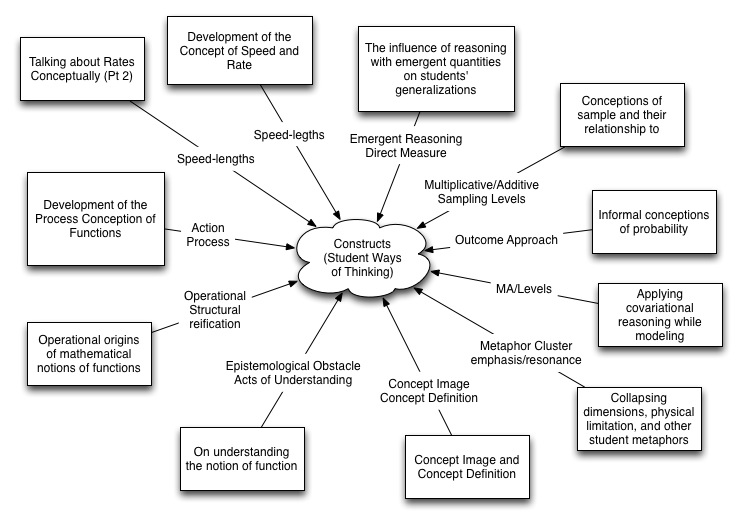
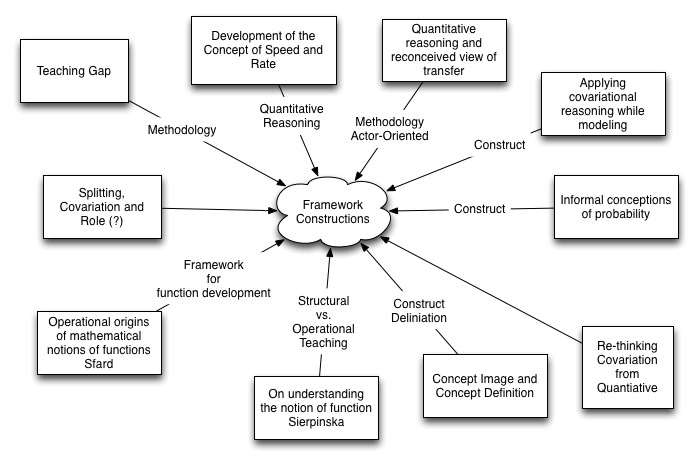
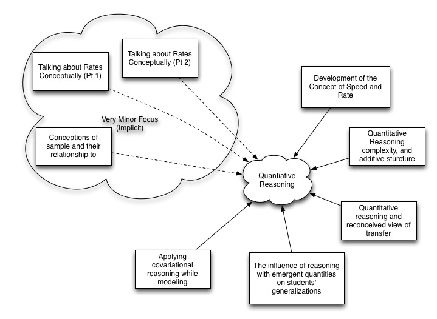

RUME I and II Qualifier Resources
This is a website where you can find some helpful tips and resources to help you with your thinking. There are three things you can find here: Sample RUME 1 and 2 Qualifiers, Tips, and some Connections developed by the 2011 RUME 1 class.
Sample Qualifiers
A decision was made that sample responses to the questions posted here would not be posted. We (math ed grad students) felt that sample responses should only come from the faculty.
Tips
Talk with each other. Share your ideas. As you can see below, collaboration can produce fruitful artifacts for everyone involved. Be active participants in synthesizing the material. Don't be shy about asking questions of each other. Feel free to ask questions to the other grad students and the faculty.
Search for connections between everything you have read in RUME 1/2. Try to move beyond blatantly obvious connections such as "these two articles are both about functions" and look deeper. These connections will help you get deeper meanings out of the articles and will give you an ability to start truly synthesizing the literature.
As you read articles, don't take everything stated as a given. If something seems very odd, question it. If you don't understand why a researcher made the choice/move he/she did, question it. If a conclusion is presented, question it. If you like/dislike the article, question yourself. This sounds very much like "question everything" there is a subtle difference. "Question everything" tends to make one adopt a hardline stance of opposition to the article and we don't necessarily recommend this. Instead, the attitude here is meant to get you reflect upon your own stumbling blocks and interpretations. If you read something that is odd, ask yourself why you think "it" is odd, what makes this thing odd. If you don't understand something, reflect on the nature of why you feel you don't understand that thing. Read previous sections of the paper again, look at referenced work. Generating questions is easy; generating reflective questions that require you to grapple with the material is harder but not impossible.
Whatever answer you give to a question, one of the most important things to do is to defend your answer with as much specificity as possible. Your answer is of less importance when compared to how you go about defending and explaining your answer so that someone not in your head can understand your position.
For what you believe to be the most important constructs/sub-constructs of each paper, type out the definitions (that you believe to be consistent with the author's intended meaning) from memory. For each construct, provide examples, counter-examples (when relevant), connections to other papers that might have used similar terminology, and initial misconceptions. After doing so, go back to the original paper to compare and see what you didn't remember and/or fully understand.
While the RUME 1/2 qualifier is important, you should not stress yourself to the point of sickness, panic attacks, etc. Remember to breathe and relax. When you do this, you will be in a better position to put forward your best thinking.
Make flashcards to help you make sure that you can define important constructs for each paper. While reading a paper and saying "I got these constructs" is easy when the paper is in front of you (or in context), applying the constructs in new/different situations is much more difficult. This is especially true when in a testing situation. Flashcards could have questions like: 1) What are the stages of co-variational reasoning? 2) What construct were used in Oertman's paper to describe student thinking about limits? You can always make multiple flashcards for each paper. Getting specific with your flashcards is not a bad idea. This way you have a level of detail at-the-ready for answering questions that can be rather specific and require attention to detail.
You may also want to prepare a notes document like this: RUME1 Exam Notes.
Smile; you will survive.
When you are done with the qualifier, go out for a beer/drink. Socializing (and celebrating finishing the qualifier) is a nice way to unwind. We are more than willing to celebrate with you.
Connections
The 2011 made some graphical representations of the connections between articles while working on a synthesis paper. Below you will find these images. Detailed explanations of these images will not be made here. If you have specific questions, you are invited to talk to Neil and/or Owen.





